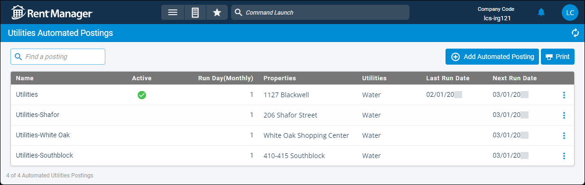

Source: https://rmxhelp.rentmanager.com/Topics/Express/CSH/Automation-Utilities-Schedules.htm
Utilities Automated Postings (Page)
You can use this Task Automation to reduce the time needed to manage recurring utility charges and the occurrence of errors from manually entering information like dates and amounts. The ability to schedule when the automation runs ensures that your postings are timely and consistent.
Related Privileges
| Group | Privilege | Column |
|---|---|---|
| Task Automation | Automate post utilities | View |
For more information, refer to Control User Access.
Related Preferences
To set up automation schedules, you must have the appropriate automation enabled in system preferences. For more information, refer to Task Automation (System Preferences).
To add or edit automated utilities postings, go to  arrow_forward
arrow_forward  Administration, then go to .
Administration, then go to .

Column Descriptions
The following columns display on the page.
| Column | Description |
|---|---|
|
Name |
The name of the posting schedule to distinguish differences in multiple automations. |
|
Active |
A green |
|
Run Day (Monthly) |
The day of each month on which the automated posting schedule runs. For example, an automated posting with a Run Day of 1 posts on the first day of each month. Rent Manager automatically posts these fees early in the morning of the chosen Run Day. |
|
Properties |
The properties to which the automated posting schedule applies. |
|
Utilities |
The name of the utility type(s) to which the automated posting schedule applies. |
|
Last Run Date |
The date on which the most recent posting occurred. |
|
Next Run Date |
The next date on which the posting occurs, calculated using the Last Run Date and the Run Day selected in the Schedule Options section. |